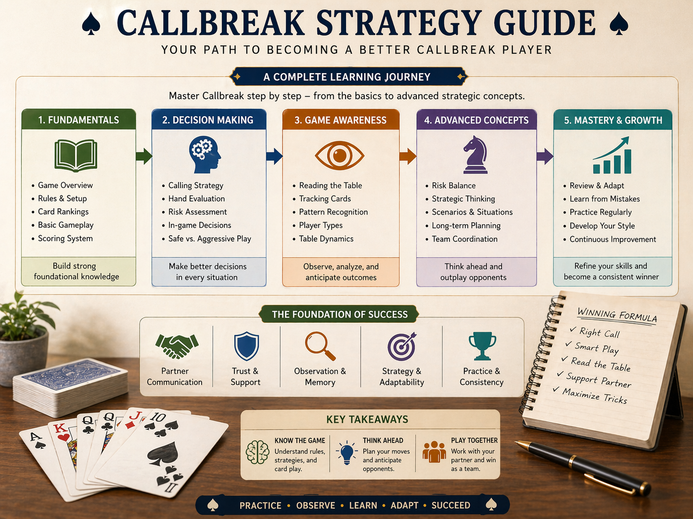
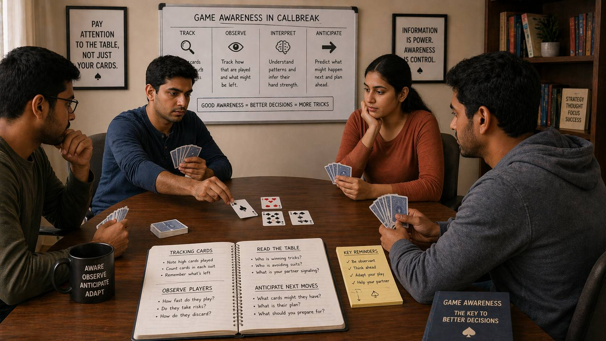
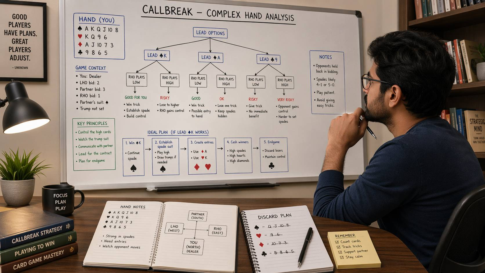

Callbreak Fundamentals: Basic Rules & How to Play
Learn the essential rules of Callbreak, including card rankings, calling system, trick-taking mechanics, partnership gameplay, and common beginner mistakes.
Read fundamentals →
Learn Callbreak rules, gameplay flow, strategic thinking, and winning strategies in one complete guide.
Discover how to make better decisions, read the table, and improve your skills with this easy-to-follow resource.

Learn the essential rules, card rankings, calling system, and gameplay flow to get started with Callbreak.
Learn the essential rules of Callbreak, including card rankings, calling system, trick-taking mechanics, partnership gameplay, and common beginner mistakes.
Read fundamentals →Develop your decision-making skills and learn how to think strategically about every trick.

Develop a consistent thought process for every card you play, evaluate trade-offs, and avoid common decision-making errors.
Read guide →
Track cards, read opponent behavior, understand table dynamics, and anticipate likely outcomes before they happen.
Read guide →
Master risk evaluation, understand expected value, and make balanced decisions for long-term success.
Read guide →Ready to level up? Master strategic gameplay with advanced concepts used by experienced players.

Move beyond basics with advanced concepts including information asymmetry, strategic image-building, GTO thinking, block plays, and psychological elements.
Read advanced concepts →Deep dive into specific strategies, player psychology, and real-game scenarios to level up your gameplay.
Learn the most frequent beginner errors including overcalling, trump timing mistakes, and how to avoid them to improve quickly.
Read guide →Identify repeating behaviors and card patterns, predict opponent moves, and use pattern knowledge to your advantage.
Read guide →Understand aggressive, defensive, and adaptive players, identify opponent tendencies, and respond effectively.
Read guide →Handle early round, late round, strong hands, weak hands, and high pressure moments effectively.
Read guide →Plan multiple steps ahead, understand game-level decisions, create pressure intentionally, and think beyond the current trick.
Read guide →Common questions from beginners learning Callbreak.
Callbreak is a popular 4-player trick-taking card game played with fixed partnerships, where players call how many tricks they expect to win each round.
Callbreak is played with 4 players in two fixed partnerships, with partners sitting across from each other.
Start with the Fundamentals guide to learn basic rules, then explore Decision Making and Game Awareness to develop your strategic thinking.
Advanced concepts include information asymmetry, GTO thinking, block plays, strategic image-building, and the psychological elements that influence outcomes.